FACULTAD DE CIENCIAS SOCIALES - PUCP
Curso: SOC294 - Estadística para el análisis sociológico 1
Semestre 2025 - 2
Antes de iniciar, abrimos las librerias que usaremos en el
laboratorio ggplot, ggplot2, rio,
haven, dplyr
Trabajaremos con la base de datos latinarfinal.sav.
La fuente original está en Latinobarometro2020
Establecemos el directorio de trabajo y abrimos la base de datos.
getwd() ## [1] "C:/Users/u_socialesprofesor/Documents/GitHub/Estadistica1_sociologia_2025_2.github.io"setwd("C:/Users/u_socialesprofesor/Documents/GitHub/Estadistica1_sociologia_2025_2.github.io")
latinbarfinal <- read_spss("C:/Users/u_socialesprofesor/Documents/GitHub/Estadistica1_sociologia_2025_2.github.io/latinbarfinal.sav")names(latinbarfinal) ## [1] "sexo" "edad" "outAL" "deAL"
## [5] "haiti" "venezuela" "edad_quinquenal" "edad65"
## [9] "sioutAL" "sideAL" "sihaiti" "sivenezuela"
## [13] "siinmigracion" "inmigracion"pie(table(latinbarfinal$sioutAL), main = "Opinion inmigracion de Haiti")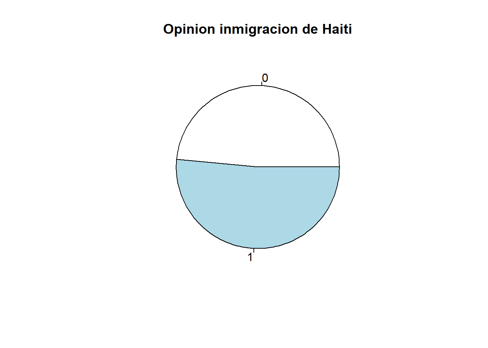
Recordemos que segun lo que hemos visto (0 = En contra de
inmigración, 1 = A favor de inmigración)/ Además, quiero hacer un
gráfico para cada una de las variables sioutLA,
sideAL, sihaiti, sivenezuela.
Podría repetir la siguiente linea 4 veces:
pie(table(latinbarfinal$sioutAL), labels = c("En contra", "A favor"), main = "Opinion inmigracion de fuera de AL")
o puedo hacer un bucle¨ usando el comando
for.
par(mfrow = c(2, 2)) #hace que cada uno de los gráficos que voy a hacer aparezcan al mismo tiempo. Si quito este código, irá apareciendo uno por uno.
vars <- c("sioutAL", "sideAL", "sihaiti", "sivenezuela")
titulos <- c(
"Opinión inmigración de fuera de AL",
"Opinión inmigración de AL",
"Opinión inmigración de Haití",
"Opinión inmigración de Venezuela"
)
for (i in seq_along(vars)) { #Inicia un bucle for que va a recorrer las posiciones 1, 2, 3, 4… hasta la longitud de vars. Usa i para ir combiando de variable y título en cada interacción.
pie(
table(latinbarfinal[[vars[i]]]), #contabiliza la frecuencia de cada categoría.
labels = c("En contra", "A favor"), #asigna etiquetas fijas a las porciones.
main = titulos[i]
)
}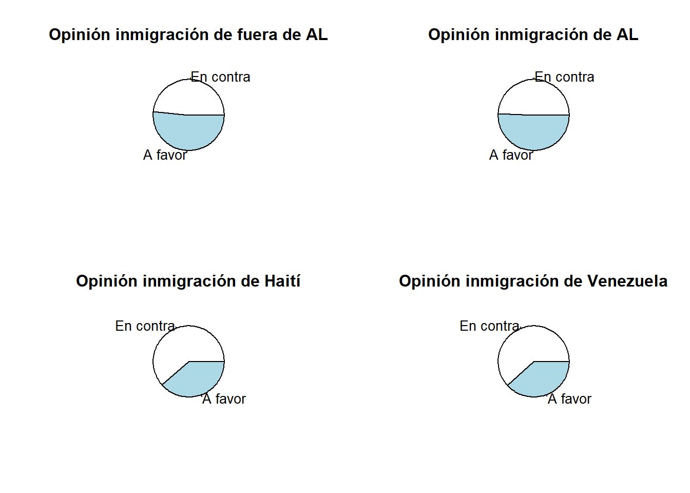
Si quisiera agregar más variables sobre percepción de la inmigración hacia otras nacionalidades, solo agregaría las variables y los subtítulos
Agregar porcentajes al gráfico pie.
par(mfrow = c(2, 2))
for (i in seq_along(vars)) {
datos <- table(latinbarfinal[[vars[i]]]) # Tabla de frecuencias
porcentajes <- round(100 * datos / sum(datos), 1) # Calcular porcentajes
etiquetas <- paste(c("En contra", "A favor"), porcentajes, "%") # Etiquetas con texto + porcentajes
pie(datos, labels = etiquetas, main = titulos[i]) # pie
}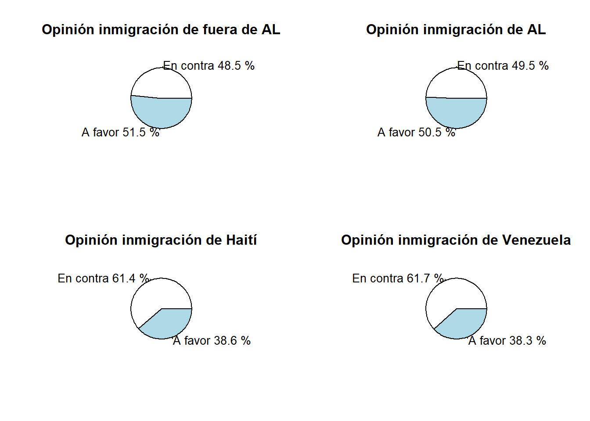
Observamos en ambos casos, que la creación de un gráfico pie, implica la tabulación de los datos e identificación de las frecuencias de cada categoría.
Distribución de las edades
boxplot(latinbarfinal$edad, main = "Boxplot de edades", ylab = "Edad", col = "lightblue")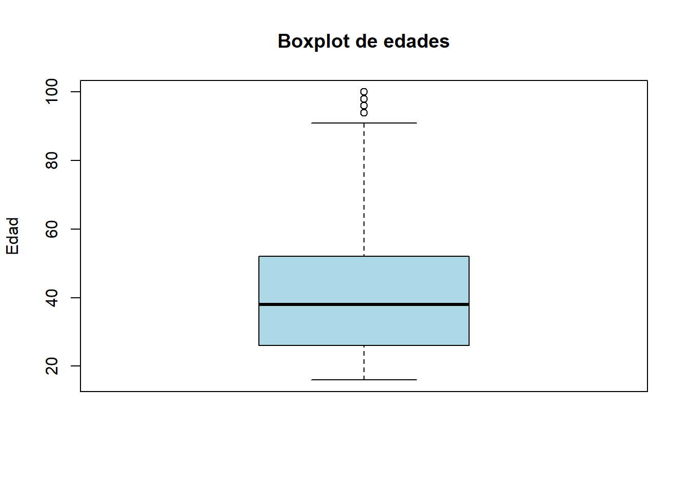
Comparación de opiniones según grupos de edad.
boxplot(latinbarfinal$edad ~ latinbarfinal$inmigracion, data = latinbarfinal, main = "Boxplot de edad, segun opiniones", xlab = "Opinión sobre inmigración", ylab = "Edad", col = c("lightblue", "lightgreen"), names = c("siempre en contra","al menos una vez a favor")) 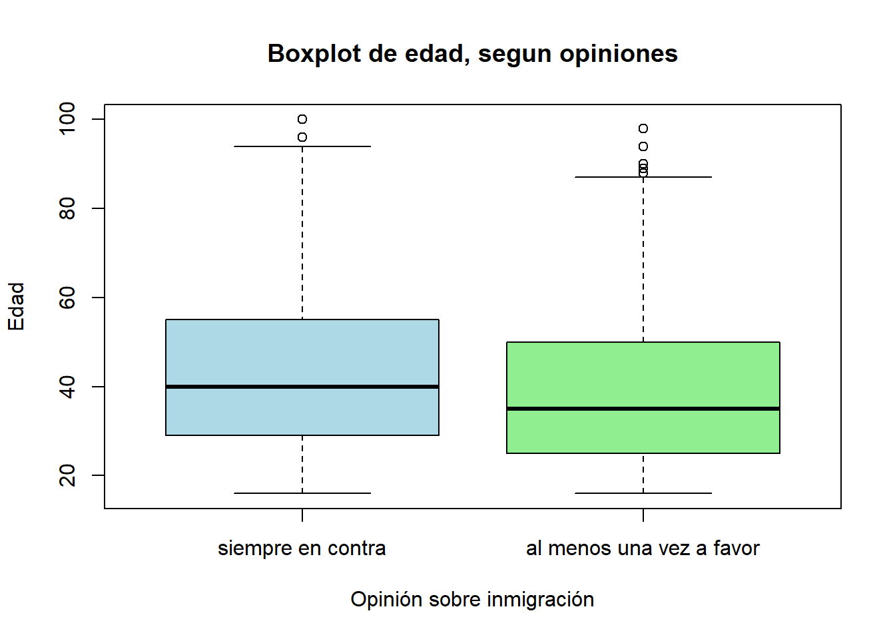
Recordemos que 1 es siempre en contra de la inmigración y 2 a favor por lo menos en algún tipo de inmigración. En este caso, la media de edad es más alta en aquellos que están siempre en contra de la inmigración.
frecuencias <- table(latinbarfinal$edad)
barplot(frecuencias, col = "turquoise4", main = "Gráfico de barras por edad", xlab = "Edad", ylab = "Frecuencia")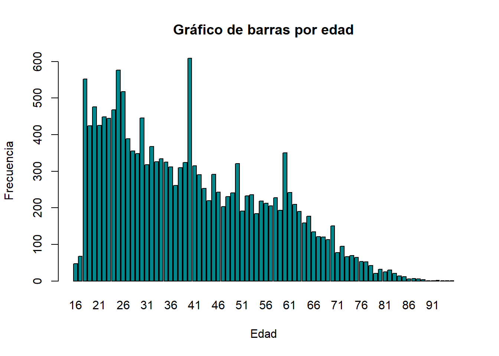
frecuencias5 <- table(latinbarfinal$edad_quinquenal)
barplot(frecuencias5, col = "turquoise4", main = "Gráfico de barras por edad (quinquenal)", xlab = "Edad", ylab = "Frecuencia")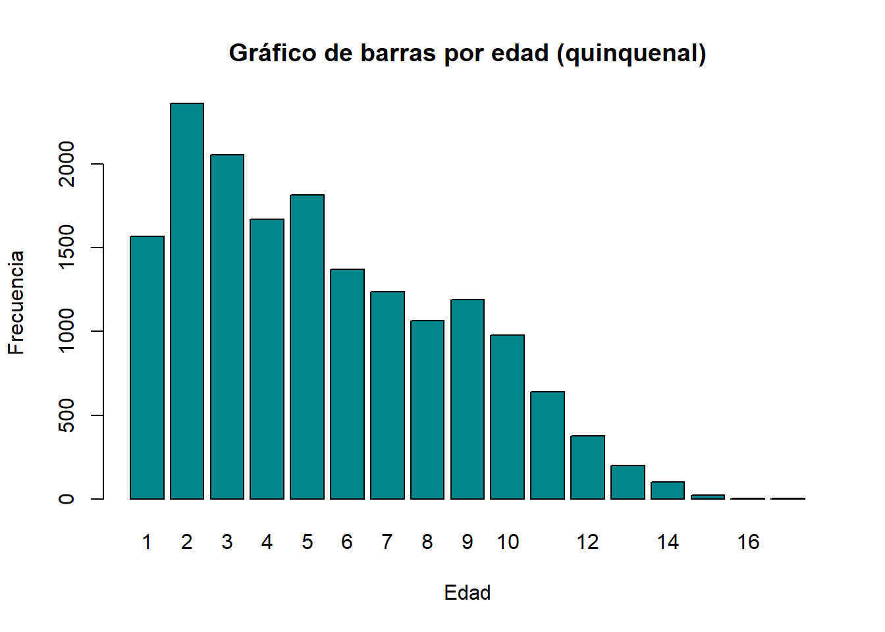
frecuencias65 <- table(latinbarfinal$edad65)
barplot(frecuencias65, col = "turquoise4", main = "Gráfico de barras por edad (65)", xlab = "Edad", ylab = "Frecuencia")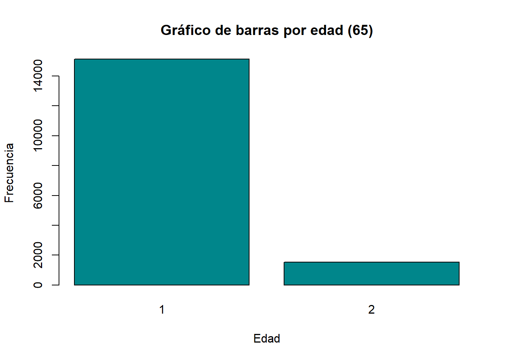
tablaedsex <- table(latinbarfinal$sexo, latinbarfinal$edad65)
barplot(tablaedsex, beside = TRUE,
legend.text = rownames(tablaedsex),
col = c("lightblue", "lightpink"),
main = "Gráfico de Barras, según edad y sexo",
xlab = "Grupo de Edad", ylab = "Frecuencia")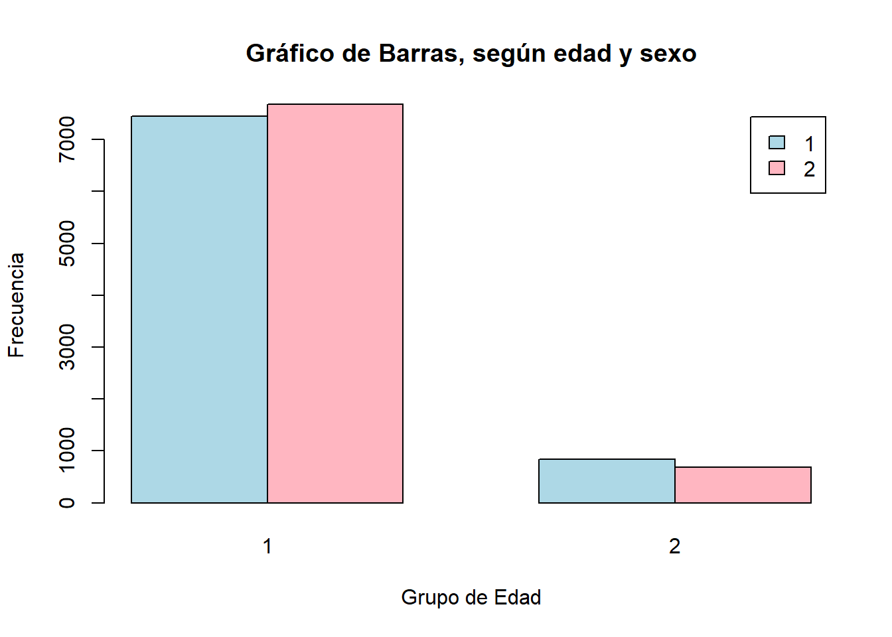
latinbarfinal <- latinbarfinal %>%
mutate(inmigracion = factor(inmigracion,
levels = c(1, 2),
labels = c("Siempre en contra", "Alguna vez a favor")))
ggplot(latinbarfinal, aes(x = edad_quinquenal, fill = inmigracion)) +
geom_bar(position = "stack") +
labs(title = "Gráfico de barras apilado por edad y opinión",
x = "Grupo de Edad",
y = "Frecuencia") +
scale_fill_manual(values = c("Alguna vez a favor" = "lightblue", "Siempre en contra" = "lightpink")) +
theme_minimal()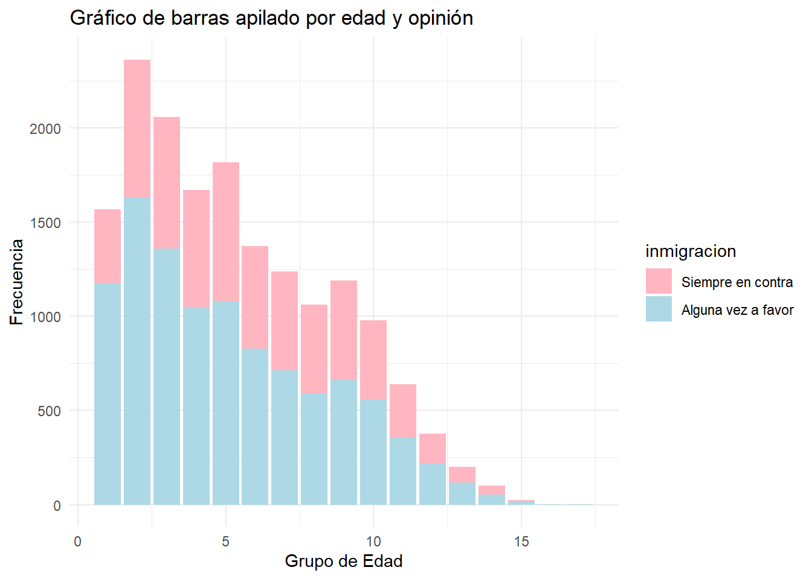
Ejercicio1: Con un boxplot, explora como se distribuyen las edades según sexo. ¿Observas alguna diferencia? Ejercicio2: Elabora un gráfico de barras apilado, donde se vea como se distribuye la opinión general sobre la inmigración entre adultos mayores de 65 y menores de 65.
Habiamos medido en la PC2, la asimetría y curtosis de la variable edad. Ahora visualizaremos dichos valores.
Histograma
hist(latinbarfinal$edad, main = "Histograma de edades", xlab = "Edad", ylab = "Frecuencia", col = "lightblue", ylim = c(0, 2500))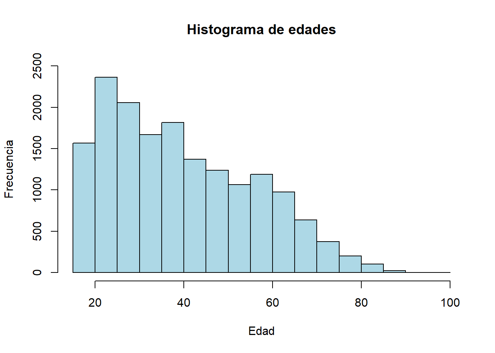
Gráfico de denisdad
plot(density(latinbarfinal$edad), main = "Distribuci?n de Edades", xlab = "Edad", ylab = "Densidad")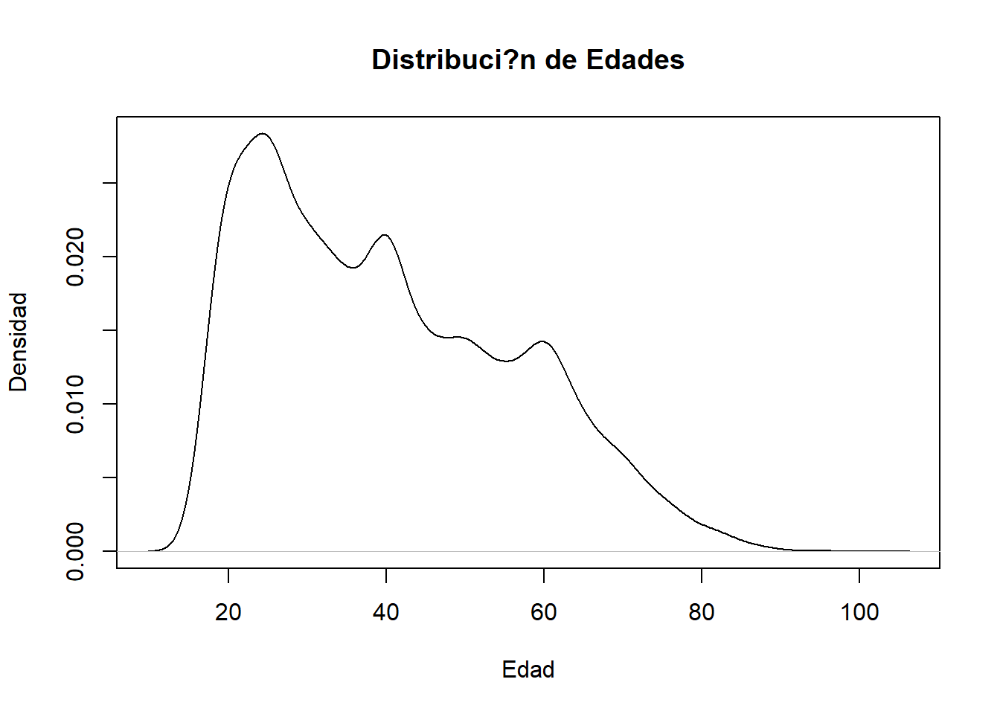
Gráfico de densidad e histograma
hist(latinbarfinal$edad, main = "Distribución de Edades", freq = FALSE, col = "lightblue")
densidad <- density(latinbarfinal$edad)
lines(densidad, col = "red")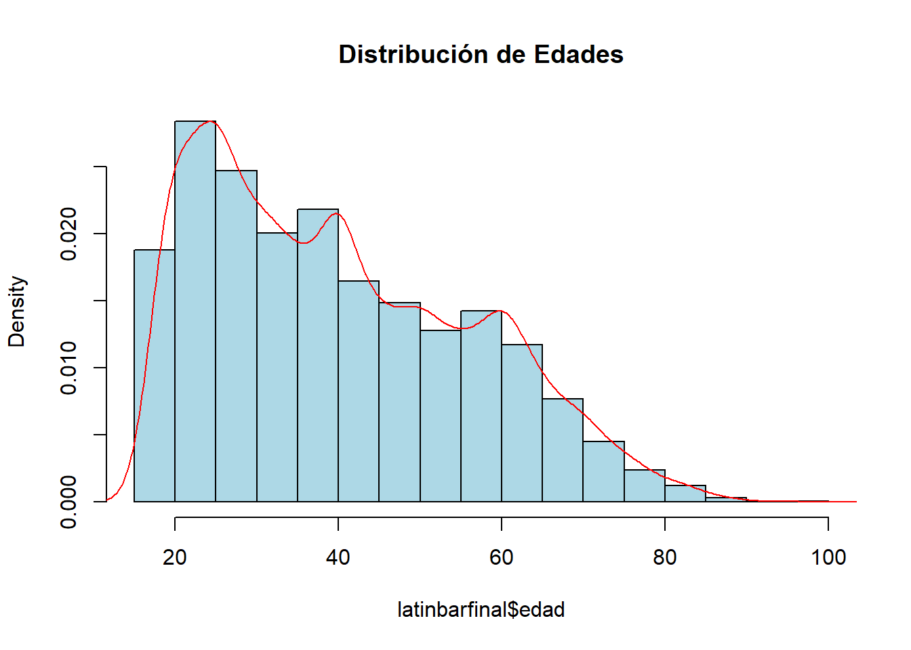
Hemos observado que los gráficos se van trabajando en capas, con indicaciones de cálculo internas. Generar un gráfico más personalizado puede tomar varias línesa de código. El paquete de ggplot ofrece varias opciones de personalización.
Nivel de aceptación de la inmigración
Primero, colocamos etiquetas a los valores.
latinbarfinal <- latinbarfinal %>%
mutate(siinmigracion = factor(siinmigracion,
levels = c(0, 1, 2, 3, 4),
labels = c(
"No acepta nunca",
"Aceptación baja",
"Aceptación media",
"Aceptación alta",
"Acepta siempre"
)
))Segundo, creamos la tabla con la que trabajaremos
acepta_migra <- table(latinbarfinal$siinmigracion)
acepta_migra = as.data.frame(acepta_migra)
colnames(acepta_migra) = c("Nivel", "Freq")grafico = ggplot(acepta_migra, aes(x = reorder(Nivel, Freq), y = Freq, fill = Nivel)) + #aes(x=reorder, ordena las barras ascendentemente
geom_bar(stat = "identity") +
coord_flip() +
labs(title = "Nivel de aceptación de la inmigración", y = "Frecuencias", x = "Categorías", subtitle = " ",
caption = "Fuente: Elaboración propia. Latinobarometro 2022") +
theme(plot.title = element_text(hjust = 0.5)) +
theme(panel.background = element_rect(fill = "white", colour = "white")) +
geom_text(aes(label = Freq),
vjust = 0.5, color = "black", size = 4)
grafico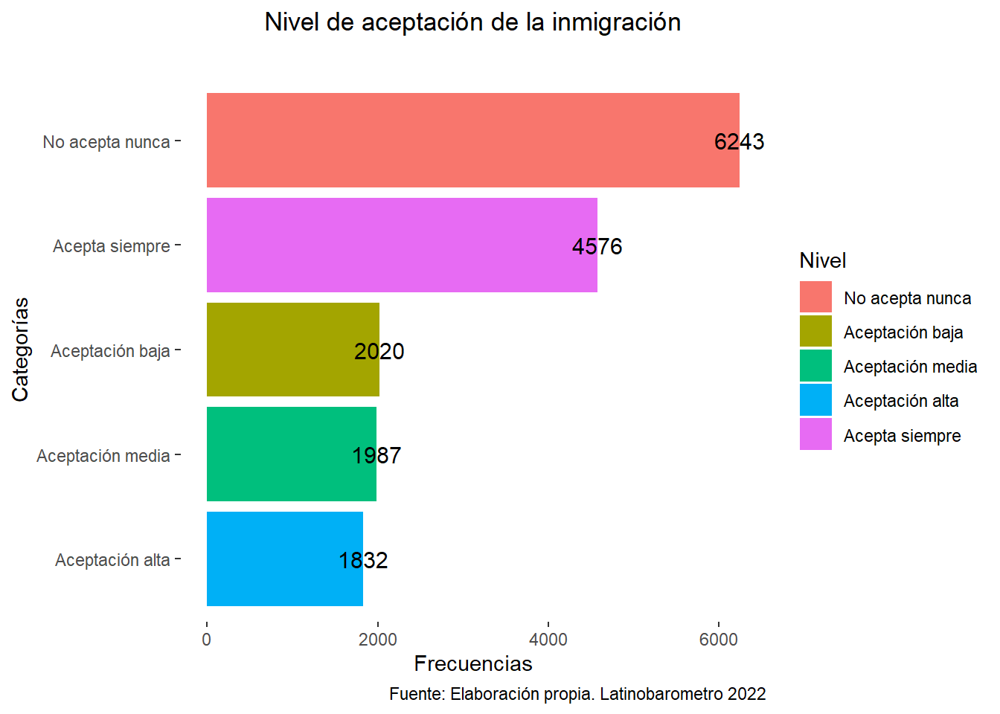
Ejercicio3: Con ggplot, elabora gráfico donde podamos observar la dispersión de edades según el nivel de aceptación de la inmigración.
Realicemos un último ejercicio con bases de datos de OurWorldInData. Trabajemos con la base de GDP y el índice de corrupción, basado en estimados del índice de V-Dem (Varieties of Democracy). Disponinble en: https://ourworldindata.org/grapher/political-corruption-index?tab=table.//
icorrupcion <- read.csv("political-corruption-index.csv")
gdp <- read.csv("gdp-per-capita-wb.csv")Exploramos las bases de datos
head(icorrupcion)## Entity Code Year
## 1 Afghanistan AFG 1789
## 2 Afghanistan AFG 1790
## 3 Afghanistan AFG 1791
## 4 Afghanistan AFG 1792
## 5 Afghanistan AFG 1793
## 6 Afghanistan AFG 1794
## Political.corruption.index..best.estimate..aggregate..average.
## 1 0.438
## 2 0.438
## 3 0.438
## 4 0.438
## 5 0.438
## 6 0.438head(gdp)## Entity Code Year GDP.per.capita..PPP..constant.2017.international...
## 1 Afghanistan AFG 2002 1280.463
## 2 Afghanistan AFG 2003 1292.333
## 3 Afghanistan AFG 2004 1260.061
## 4 Afghanistan AFG 2005 1352.321
## 5 Afghanistan AFG 2006 1366.993
## 6 Afghanistan AFG 2007 1528.345Les cambiamos los nombres y fusionamos las bases de datos, con la variable clave “code”
names(icorrupcion) <- c("entidad", "code", "year", "pci")
names(gdp) <- c("entidad", "code", "year", "gdp")trabajaremos solo con aquellos casos del año 2022.
icorrupcion_22 <- subset(icorrupcion, year == 2022)
gdp_22 <- subset(gdp, year == 2022)Fusionamos la base de datos
corrupgdp_mfalse <- merge(icorrupcion_22, gdp_22, by = "code", all = FALSE)Elimina los datos vacíos
corrupgdp <- corrupgdp_mfalse[!(corrupgdp_mfalse$code == "" | corrupgdp_mfalse$code == "OWID_WRL"), ] #me quedo con 164 paísesSelecciono solo las variables que me interesan y les cambio de nombre.
corrupgdp <- select(corrupgdp, "code", "entidad.x", "year.x", "pci", "gdp")
names(corrupgdp) <- c("code", "entidad", "year", "pci", "gdp")Ploteo el gráfico de dispersión
plot(corrupgdp$gdp, corrupgdp$pci)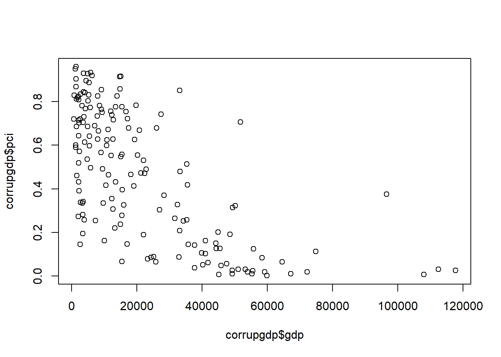
Visualizar a qué país corresponde cada punto
plot(corrupgdp$gdp, corrupgdp$pci, type="n", xlab="PIB", ylab="Indice de corrupción política", main="PIB vs Ingreso per cápita")
text(corrupgdp$gdp, corrupgdp$pci, labels = corrupgdp$code, cex = 0.7)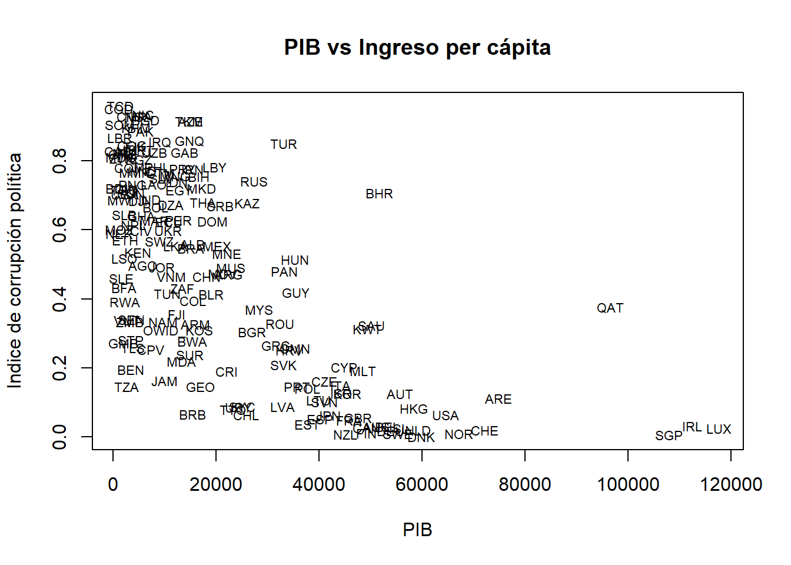
plot(corrupgdp$gdp, corrupgdp$pci, type="n", xlab="PIB", ylab="Indice de corrupción política", main="PIB vs Ingreso per cápita")
text(corrupgdp$gdp, corrupgdp$pci, labels = corrupgdp$code,
col = ifelse(corrupgdp$code == "PER", "red", "black"), cex = 0.6)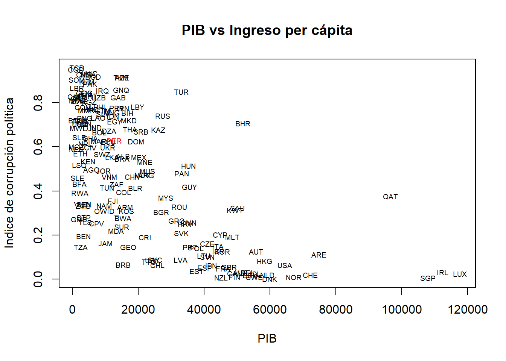